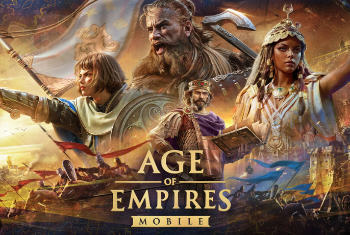

¡El torneo Red Bull Wololo está de regreso con Red Bull Wololo: El Reinado a partir de mañana, 3 de octubre a las 7:00 am PT (10 am ET / 14:00 UTC)! Pronto se forjarán nuevas leyendas a través de los fuegos de la competencia en el Castillo de Almodóvar del Río en España, convocando a los campeones más feroces de Age of Empires para desafiar a los reyes reinantes del castillo por su corona y Age of Mythology: ¡los primeros héroes de Retold! Además, con más de veinticinco años de batallas legendarias en la franquicia Age of Empires, Red Bull Wololo: El Reinado constará de cuatro títulos en los que los competidores podrán demostrar su valía.
Age of Empires Mobile combina los elementos de Age of Empires con un juego estratégico diseñado específicamente para plataforma móvil, y ofrece a los fanáticos del género una nueva forma de disfrutar de la querida franquicia. Experimenta un juego emocionante con batallas rápidas e intensas, recolección rápida de recursos y construcción militar, defiéndete contra olas de enemigos y forma alianzas con cientos de jugadores que te ayudarán a construir un imperio dominante. 'Age of Empires Mobile' será un juego free to play y, como tal, se monetizará mediante microtransacciones. Seguramente haya algún tipo de moneda premium con la que comprar potenciadores y objetos de convenciencia.
